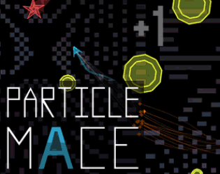

PARTICLE MACE
Detalhes
|  | |
| Tempo de jogo | Não Jogado |
| Última Atividade | Nunca |
| Adicionado | 04/04/2025 0:20:03 |
| Modificado | 04/04/2025 0:23:07 |
| Status de Conclusão | Not Played |
| Biblioteca | Itch.io |
| Fonte | itch.io |
| Plataforma | PC (Windows) |
| Data de Lançamento | 03/03/2014 |
| Pontuação da Comunidade | 80 |
| Avaliação da crítica | |
| Pontuação do Usuário | |
| Gênero | Adventure Arcade Indie Strategy |
| Desenvolvedor | Andy Wallace |
| Editor | Andy Wallace |
| Funções | Co-Operative Multiplayer Single Player |
| Links | Official Steam iPhone Itch Twitch |
| Tag | [GGDeals] Synced |
Descrição
************
Because Itch.io is rad and has always been incredibly supportive of indie development, PARTICLE MACE will always be $1 less here than on other platforms!
************
PARTICLE MACE is a 1-4 player game by Andy Wallace about defending yourself in a hostile universe by swinging particles into enemies.
PARTICLE MACE is a game about capturing the thrill of classic arcade games with a new, physics based mechanic.
PARTICLE MACE is a game about trying not to die, but that's impossible.

---------------------------------------------
Features:
■ 3 Endless and Brutal Arcade Modes
■ 150 Missions
■ 9 Ships to Unlock
■ 2-4 Player Deathmatch
■ 2-4 Player Arcade Co-op
■ Leaderboards
■ PS3, PS4, Xbox One & Xbox 360 Controller Support
■ Color Blind Support
Those with photosensitivity may experience difficulties playing PARTICLE MACE because of the intense flashing lights and rapid movement during gameplay.
Game by Andy Wallace
Music by Nathaniel Chambers
Audio by K Anthony Marefat & Bobby Fata
PR by Felix Kramer

---------------------------------------------
"Your thumbs ride the analog sticks as if a space cowboy with a mean lasso technique."
- Kill Screen
"A rad little game, all controlled with a single joystick/thumbstick."
- Game Revolution
"A complex physics based battle royal."
- Greenlit Gaming
---------------------------------------------
Drop secret notes/send feedback to
andy[at]andymakes[dot]com or @andy_makes
more info at particlemace.com
---------------------------------------------
2021 Update: Unfortunately Apple makes it nearly impossible for small devs to maintain older software on their platform. This game just isn't selling enough at this point in its life for me to dump the time into it to meet Apple's current standards. It makes me sad, but I'm removing the Mac/iOS version so that people don't download something they can't use.